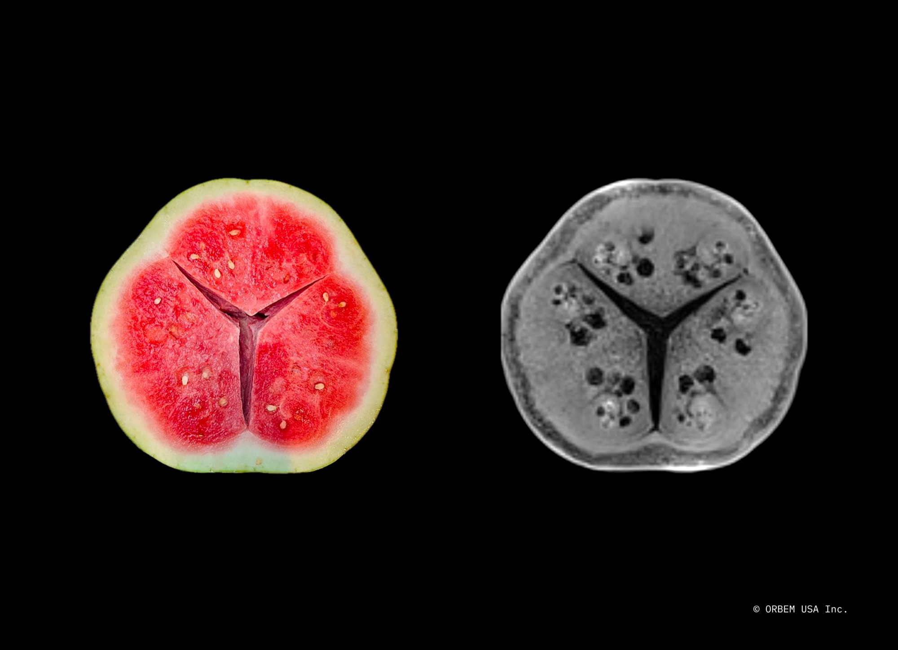
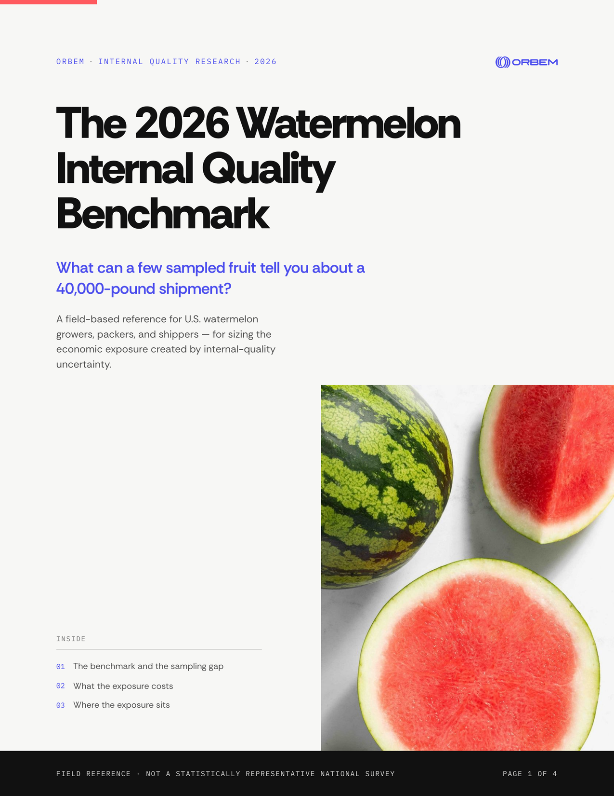
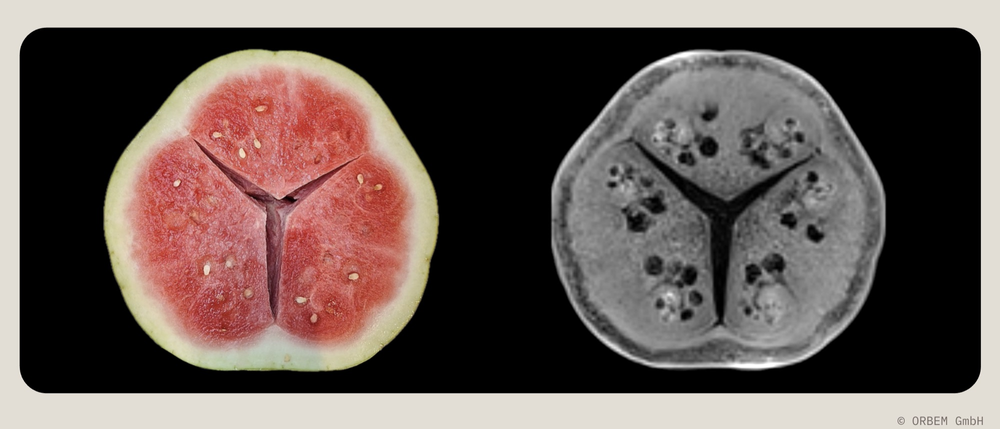

01 / DEFECTS
A small sample represents the load
Internal conditions may not be distributed evenly, so the result depends heavily on which fruit happen to be selected.
For U.S. watermelon producers
Genus Echo brings non-destructive MRI to the packing line, providing internal-quality information for every fruit at industrial speed.
25-minute assessment · Built around your operation

2026 industry benchmark
Compare your operation with a practical field reference for rejection exposure, sampling risk, rerouting costs, and product-value recovery.
Four pages · Field reference, not a statistically representative national average

The problem
A few sampled fruit may influence the disposition of a roughly 40,000-pound shipment. The remaining internal quality is inferred rather than measured.
Internal conditions may not be distributed evenly, so the result depends heavily on which fruit happen to be selected.
An affected shipment may be accepted after review, discounted, downgraded, claimed, or rerouted. Not every rejection creates every cost.
The exposure can include logistics, product-value recovery, QC labor, destructive sampling, and supported claims.
What it does
Genus Echo sits inline on a single packing line. Watermelons pass through the scanner on your existing conveyor. The MRI captures a full internal image of each fruit; AI grading interprets it and outputs a quality score, defect classification, and a per-fruit data record.
Non-destructive — no cutting, no sampling. Fruit continues down the line intact.
Every fruit graded — 100% inspection coverage, not a sampled subset.
AI that improves with your fruit — learns your varieties, conditions, and standards over time.
Complements your line — it doesn't replace field sorting, visual grading, or your QC team.

Visual proof
A watermelon moving through Genus Echo on a production line — imaged, graded, and turned into a per-fruit record without ever being cut.
Your browser can't play this clip inline.
Open the demo ↗How it works
Magnetic Resonance Imaging reads the behavior of hydrogen nuclei in the fruit. Water and tissue produce distinct signals the system uses to build a full internal image — no contact, no damage. Orbem's models, trained on millions of scanned units, then classify defects, provide structured internal-quality information for every fruit in milliseconds.
The business case
A composite model for a 50–75-million-pound seasonal operation. This is a realistic reference point for closer analysis, not a promise of savings for every operation.
Up to approximately $40K in supported claims — included only when documented.
Destructive sampling — operation-specific upside excluded from the $300K headline.
Severity matters — not every rejection creates every cost or a total-load loss.
Account inputs matter — volume, buyers, routes, recovery, and staffing change the result.
In 25 minutes, we’ll map the potential fit using your line speed, varieties, defect profile, and buyer requirements.
Deployment model
Non-disruptive by design. Installs on one line, alongside your existing systems — adding a layer of internal-quality verification, not replacing what works.
Off-season installation. Calibrated and running before your season starts.
Start with one line. Deploy one scanner, validate the value case, then expand.
Line-speed compatible. A single unit clears a typical single-shift throughput on a mid-sized line in one operating day.
Commercial model
Deploy without capital outlay. No large upfront investment, no balance-sheet impact, no lengthy procurement cycle.
The scanner counts every fruit and pricing scales cleanly with actual throughput. As your operation grows, pricing scales with it — no renegotiation.
Pricing is anchored to the value created. Producers typically recover a significant share of the fee through savings alone in year one — and the ratio improves after that.
Track record
Units scanned in operational production, originating in poultry.
Orbem scanners live on European production lines across food categories.
Commercial fresh-produce deployment operational at a major European watermelon grower.
Active expansion — deployment assessments and commercial conversations across leading watermelon and avocado operations.
FAQ
No. It replaces the specific tasks machines do better than people — grading consistency, throughput, per-fruit measurement. Your team keeps handling everything the machine can't: field decisions, buyer relationships, exception handling.
No. MRI is non-destructive. Fruit passes through the scanner and continues down the line intact.
Per-fruit structured data is available via API, dashboard export, or direct integration into your existing farm management or QC systems.
Installations are scheduled around the off-season to avoid operational disruption. From contract to operational scanning is typically a matter of weeks, not months.
Potential applications and operating fit are evaluated separately for each crop and line configuration.
Per fruit. There is no upfront capital outlay, and pricing scales with your actual throughput.
The benchmark uses approximately 1% rejection as a high-quality operating target. It is not a guaranteed outcome; the operation-specific case depends on current rejection causes, buyer practices, and routing decisions.
Requirements are shared during the technical assessment. Most watermelon packing houses meet them without material modifications.
Fruit formats, line rates, and operating requirements are validated during the technical assessment.
Yes. Producers can start with a phased deployment on a single line before expanding to additional lines or facilities.
Get started
See what Genus Echo would look like on your line. Book a 25-minute call and we'll walk through a phased deployment at your operation.